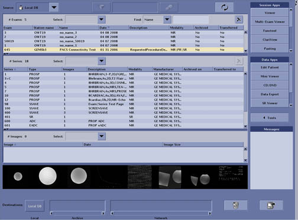
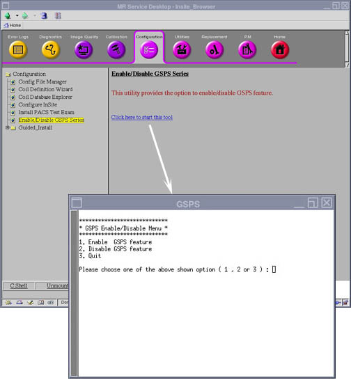

- 00000018WIA305EB030GYZ
- id_123743531.6
- Oct 31, 2022 6:13:19 AM
PACS System Verification And Troubleshooting
| Required persons | Preliminary requirements | Procedure | Finalization |
|---|---|---|---|
| 1 | Not Applicable | 30 minutes | Not Applicable |
Troubleshooting Failures In Transferring Images To The PACS System
- Configure the PACS DICOM network properties on the system and select it as the current networking device.
- Select the PACS Test Exam in the Image Browser. See Image Browser.
Figure 1. Image Browser 
- Select Network then By Exam.
- If the exam transfers without errors, you’re done testing this PACS device. Repeat for any additional PACS devices at the site.
- If the exam transfer yields an error, troubleshoot appropriately.
- Select a series in the series listing window. Select Network->By Series.
- Go through each series in this manner and record the series which are failing.
- If series 1, 3, 4, 5, 7, 10, 12, 98, 600, 601, 1001, 1251, or 5005 fail, contact the On-Line center for further assistance. These are standard image types and a failure suggests a problem.
- If series 100 or 1000 fails, check if the PACS system supports Color Screensave image types. The site may need to avoid creating Color Screensaves with Post Processing tools if the PACS system does not support them.
- If series 101 fails, the PACS system likely does not support Structured Report DICOM Objects. Consult the PACS DICOM Conformance Statement. If the PACS does not support Structured Reports, advise the site to avoid Generating Reports in Functool.
- If series 10012 fails, the PACS system likely does not support Grey scale Soft copy Presentation State (GSPS) DICOM Objects. Consult the PACS DICOM Conformance Statement. If the PACS does not support GSPS, the site can disable the creation of GSPS Objects through Guided Install. If the GSPS feature is turned off, the site can use the old “Save State” (ss in the command window) and the system will not create GSPS series. Please see Disabling/Enabling GSPS Feature.
Verifying Advantage Windows Annotation Patches
The PACS Test Exam can also be used to verify that the site has the correct Annotation Patches loaded on their AW Workstations. For the system release, annotation patches exist for the following AW platforms: AW4.0, AW4.1, AW4.2, and AW4.3.
- Configure the AW Workstation DICOM network properties on the system. Select the AW as the current networking device.
- Select the PACS Test Exam in the Browser.
- Select Network then By Exam.
- If the exam transfer yields an error, troubleshoot with the above procedure.
- Otherwise, go to the AW system and view the image annotation on the following images. If annotation is missing, this will indicate that Annotation Patches need to be loaded.
- View the image in series 600. If the PSD name is annotated as “FSE/Prop”, this verifies that the AW has the latest 14.0 Annotation patch loaded. If the “Prop” is missing, the latest MR 11.0 Annotation patch needs to be loaded on the AW system.
- View the image in series 10. If the PSD name is annotated as “M3D/LAVA/..”, this verifies that the AW has the latest MR 14.0 Annotation patch loaded. The “LAVA” text is the key. The number annotated after “LAVA” is not important (it’s the flip angle). If the “LAVA” is missing, the latest 14.0 Annotation patch needs to be loaded on the AW system.
- View the images in series 4. If the PSD name is annotated as "M3D/COSMIC/..", this verifies that the AW has the latest 14.0 annotation patch loaded. The "COSMIC" text is the key. The number annotated after "COSMIC" is not important (it's the flip angle). If the "COSMIC" is missing, the latest 14.0 annotation patch needs to be loaded on the AW system.
Verifying Window Width/Window Level On PACS
Using the PACS Test Exam, which includes real human anatomy, it is possible to quickly check PACS Window Level and Window Width processing. By following the following steps, it is possible to verify that the PACS system is properly receiving the Window Width/Window Level values stored in the DICOM image header.
- On the system scanner, open the image in series 4 in the Viewer. Note the “WW/WL” values annotated in the lower right hand corner of the image:
W = ________________ L = ___________________
- On the system scanner, open the image in series 600 in the Viewer. Note the “WW/WL” values annotated in the lower right hand corner of the image:
W = ________________ L = ___________________
- Move over to the PACS system and view the above images on the PACS system. Verify that the PACS system is using the above Window Width and Window Level settings. Note that the site PACS Administrator may need to disable some automatic preset values for this test. The goal is to verify that “by default” the correct values are being interpreted from the DICOM image header.
Verifying Filmer Connectivity
It is also possible to verify connectivity to site Filming devices by using the PACS Test Exam. Images from this test exam or the “SMPTE” pattern exam should be used to verify filming connectivity.
Disabling/Enabling GSPS Feature
- Invoke the MR Service desktop tool.
- Click the Configuration tab, then select Enable/Disable GSPS Series item. Select Click here to start this tool. See GSPS Enable/Disable Tool.
Figure 2. GSPS Enable/Disable Tool 
NoteBy default, the mode is set to “Enable”.
- To disable the creation of GSPS series, select Disable GSPS feature by typing the number 2 and pressing Enter.
- Quit the tool and reboot the system.
- From this point on, when “ss” is entered in the Viewer Command Window, the legacy Save State feature executes and the GSPS series is not created.
- The creation of GSPS series can be turned back on by selecting Enable GSPS feature in the Service Browser at any time.
Finalization
No finalization steps.